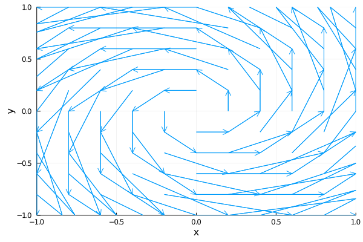

Vector fields using Julia's Plots.jl
For this to work, you’ll need Julia installed, as well as the package “Plots.”
Note: The indexing in this function is somewhat confusing, to be honest I worked it out by “trial and error” and “print debugging.”
using LinearAlgebra
using Plots
gr()
function vf_plot(x, y, f)
X = ones(length(y))*transpose(x)
Y = y*transpose(ones(length(x)))
Z = map(f, X, Y)
xs = reshape(X, :)
ys = reshape(Y, :)
uv = reshape(Z, :)
us = [t[1] for t in uv]
vs = [t[2] for t in uv]
quiver(xs, ys, quiver=(us,vs))
xlabel!("x")
ylabel!("y")
xlims!(x[1], x[length(x)])
ylims!(y[1], y[length(y)])
end
Now to generate a plot, we can write:
x = -1:0.2:1
y = -1:0.2:1
vf1(x, y) = [-y, x]
vf_plot(x, y, vf1)
The output will look something like this: 